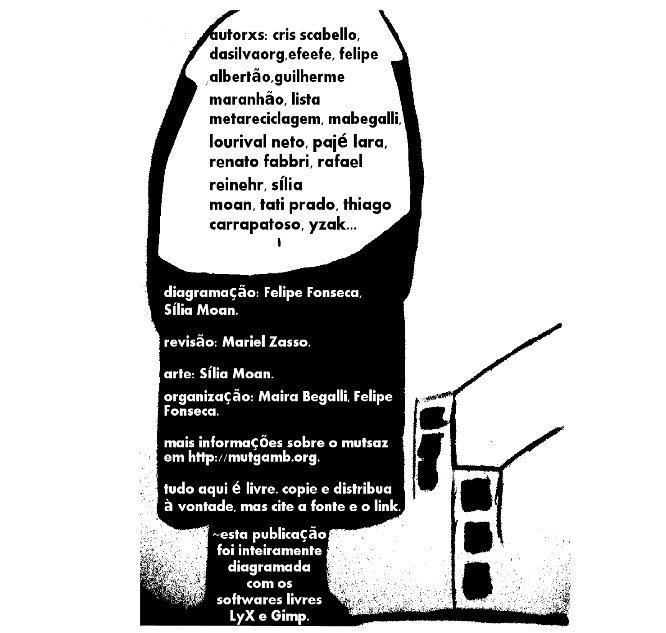

Chegou a primavera, e com ela o Mutirão da Gambiarra completou quatro edições das publicações sazonais.
O ciclo se fechou. Ou começamos outro?
Três meses atrás a Sília publicou o conceito do inverno e da nossa musa Pozimi:
Prédios, todos trancados, frio e sentimento contido.
Sim. Pozimi, a musa de inverno, é triste. Assim como toda a composição. O frio que não a deixa sorrir. A mudança que o inverno causa no organismo. O corpo moldado pelo ambiente, pelos arredores que precisa de umas gambiarras para continuar seguindo. Olhos pequenos, expressão estática.
Sem dúvida essa equipe editorial conseguiu superar a paralisia estática que o frio sugere. E assim confeccionamos a edição mais "redodinha" e colaborativa que publicamos até agora.
O efeefe preparou diferentes versões para serem baixadas: a4, a5, e-book e telacheia. Escolha a sua e baixe aqui.
Boa Leitura!
